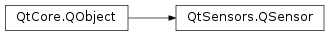

QSensor¶
Inherited by: QCompass, QOrientationSensor, QPressureSensor, QAccelerometer, QProximitySensor, QAltimeter, QLightSensor, QAmbientLightSensor, QHumiditySensor, QMagnetometer, QIRProximitySensor, QLidSensor, QDistanceSensor, QTapSensor, QGyroscope, QTiltSensor, QRotationSensor, QHolsterSensor, QAmbientTemperatureSensor
Synopsis¶
Functions¶
- def
addFilter(filter) - def
availableDataRates() - def
axesOrientationMode() - def
backend() - def
bufferSize() - def
connectToBackend() - def
currentOrientation() - def
dataRate() - def
description() - def
efficientBufferSize() - def
error() - def
filters() - def
identifier() - def
isActive() - def
isAlwaysOn() - def
isBusy() - def
isConnectedToBackend() - def
isFeatureSupported(feature) - def
maxBufferSize() - def
outputRange() - def
outputRanges() - def
reading() - def
removeFilter(filter) - def
setActive(active) - def
setAlwaysOn(alwaysOn) - def
setAxesOrientationMode(axesOrientationMode) - def
setBufferSize(bufferSize) - def
setCurrentOrientation(currentOrientation) - def
setDataRate(rate) - def
setEfficientBufferSize(efficientBufferSize) - def
setIdentifier(identifier) - def
setMaxBufferSize(maxBufferSize) - def
setOutputRange(index) - def
setSkipDuplicates(skipDuplicates) - def
setUserOrientation(userOrientation) - def
skipDuplicates() - def
type() - def
userOrientation()
Signals¶
- def
activeChanged() - def
alwaysOnChanged() - def
availableSensorsChanged() - def
axesOrientationModeChanged(axesOrientationMode) - def
bufferSizeChanged(bufferSize) - def
busyChanged() - def
currentOrientationChanged(currentOrientation) - def
dataRateChanged() - def
efficientBufferSizeChanged(efficientBufferSize) - def
maxBufferSizeChanged(maxBufferSize) - def
readingChanged() - def
sensorError(error) - def
skipDuplicatesChanged(skipDuplicates) - def
userOrientationChanged(userOrientation)
Static functions¶
- def
defaultSensorForType(type) - def
sensorTypes() - def
sensorsForType(type)
Detailed Description¶
The
PySide2.QtSensors.QSensorclass represents a single hardware sensor.The life cycle of a sensor is typically:
- Create a sub-class of
PySide2.QtSensors.QSensoron the stack or heap.- Setup as required by the application.
- Start receiving values.
- Sensor data is used by the application.
- Stop receiving values.
The sensor data is delivered via
PySide2.QtSensors.QSensorReadingand its sub-classes.
Orientation¶
Some sensors react to screen orientation changes, such as
PySide2.QtSensors.QAccelerometer,PySide2.QtSensors.QMagnetometerandPySide2.QtSensors.QRotationSensor. These are so called orientable sensors. For orientable sensors,PySide2.QtSensors.QSensorsupports changing the reporting of the reading values based on the orientation of the screen.For orientable sensors, the
PySide2.QtSensors.QSensor.axesOrientationMode()property controls how the orientation affects the reading values.In the default mode,
QSensor.FixedOrientation, the reading values remain unaffected by the orientation. In theQSensor.AutomaticOrientationmode, the reading values are automatically rotated by taking the current screen orientation into account. And finally, in theQSensor.UserOrientationmode, the reading values are rotated according to a user-specified orientation.The functionality of this is only available if it is supported by the backend and if the sensor is orientable, which can be checked by calling
QSensor.isFeatureSupported()with theQSensor.AxesOrientationflag.The orientation values here are always of the screen orientation, not the device orientation. The screen orientation is the orientation of the GUI. For example when rotating a device by 90 degrees counter-clockwise, the screen orientation compensates for that by rotating 90 degrees clockwise, to the effect that the GUI is still facing upright after the device has been rotated. Note that applications can lock the screen orientation, for example to force portrait or landscape mode. For locked orientations, orientable sensors will not react with reading changes if the device orientation is changed, as orientable sensors react to screen orientation changes only. This makes sense, as the purpose of orientable sensors is to keep the sensor orientation in sync with the screen orientation.
The orientation values range from 0 to 270 degrees. The orientation is applied in clockwise direction, e.g. an orientation value of 90 degrees means that the screen has been rotated 90 degress to the right from its origin position, to compensate a device rotation of 90 degrees to the left.
See also
PySide2.QtSensors.QSensorReading
-
class
PySide2.QtSensors.QSensor(type[, parent=Q_NULLPTR])¶ Parameters: - type –
PySide2.QtCore.QByteArray - parent –
PySide2.QtCore.QObject
Construct the
typesensor as a child ofparent.Do not use this constructor if a derived class exists for the specific sensor type.
The wrong way is to use the base class constructor:
QSensor *magnetometer = new QSensor(QMagnetometer::type, this);
The right way is to create an instance of the derived class:
QMagnetometer *magnetometer = new QMagnetometer(this);
The derived classes have additional properties and data members which are needed for certain features such as geo value support in
PySide2.QtSensors.QMagnetometeror acceleration mode support inPySide2.QtSensors.QAccelerometer. These features will only work properly when creating a sensor instance from aPySide2.QtSensors.QSensorsubclass.Only use this constructor if there is no derived sensor class available. Note that all built-in sensors have a derived class, so using this constructor should only be necessary when implementing custom sensors, like in the Grue sensor example .
- type –
-
PySide2.QtSensors.QSensor.Feature¶ Lists optional features a backend might support.
The features common to all sensor types are:
Constant Description QSensor.Buffering The backend supports buffering of readings, controlled by the QSensor.bufferSizeproperty.QSensor.AlwaysOn The backend supports changing the policy on whether to suspend when idle, controlled by the QSensor.alwaysOnproperty.QSensor.SkipDuplicates The backend supports skipping of same or very similar successive readings. This can be enabled by setting the QSensor.skipDuplicatesproperty to true.The features of
PySide2.QtSensors.QMagnetometerare:Constant Description QSensor.GeoValues The backend supports returning geo values, which can be controlled with the QMagnetometer.returnGeoValuesproperty.The features of
PySide2.QtSensors.QLightSensorare:Constant Description QSensor.FieldOfView The backend specifies its field of view, which can be read from the QLightSensor.fieldOfViewproperty.The features of
PySide2.QtSensors.QAccelerometerare:Constant Description QSensor.AccelerationMode The backend supports switching the acceleration mode of the acceleromter with the QAccelerometer.accelerationModeproperty.The features of
PySide2.QtSensors.QPressureSensorare:Constant Description QSensor.PressureSensorTemperature The backend provides the pressure sensor’s die temperature The features of all orientable sensors are:
Constant Description QSensor.AxesOrientation The backend supports changing the axes orientation from the default of QSensor.FixedOrientationto something else.See also
-
PySide2.QtSensors.QSensor.AxesOrientationMode¶ Describes how reading values are affected by the screen orientation.
Constant Description QSensor.FixedOrientation No automatic rotation is applied to the reading values. QSensor.AutomaticOrientation The reading values are automatically rotated based on the screen orientation. QSensor.UserOrientation The reading values are rotated based on the angle of the PySide2.QtSensors.QSensor.userOrientation()property.See also
-
PySide2.QtSensors.QSensor.activeChanged()¶
-
PySide2.QtSensors.QSensor.addFilter(filter)¶ Parameters: filter – PySide2.QtSensors.QSensorFilterAdd a
filterto the sensor.The sensor does not take ownership of the filter.
PySide2.QtSensors.QSensorFilterwill inform the sensor if it is destroyed.See also
-
PySide2.QtSensors.QSensor.alwaysOnChanged()¶
-
PySide2.QtSensors.QSensor.availableDataRates()¶ Return type:
-
PySide2.QtSensors.QSensor.availableSensorsChanged()¶
-
PySide2.QtSensors.QSensor.axesOrientationMode()¶ Return type: PySide2.QtSensors.QSensor.AxesOrientationMode
-
PySide2.QtSensors.QSensor.axesOrientationModeChanged(axesOrientationMode)¶ Parameters: axesOrientationMode – PySide2.QtSensors.QSensor.AxesOrientationMode
-
PySide2.QtSensors.QSensor.backend()¶ Return type: PySide2.QtSensors.QSensorBackend
-
PySide2.QtSensors.QSensor.bufferSize()¶ Return type: PySide2.QtCore.int
-
PySide2.QtSensors.QSensor.bufferSizeChanged(bufferSize)¶ Parameters: bufferSize – PySide2.QtCore.int
-
PySide2.QtSensors.QSensor.busyChanged()¶
-
PySide2.QtSensors.QSensor.connectToBackend()¶ Return type: PySide2.QtCore.boolTry to connect to a sensor backend.
Returns true if a suitable backend could be found, false otherwise.
The type must be set before calling this method if you are using
PySide2.QtSensors.QSensordirectly.
-
PySide2.QtSensors.QSensor.currentOrientation()¶ Return type: PySide2.QtCore.int
-
PySide2.QtSensors.QSensor.currentOrientationChanged(currentOrientation)¶ Parameters: currentOrientation – PySide2.QtCore.int
-
PySide2.QtSensors.QSensor.dataRate()¶ Return type: PySide2.QtCore.int
-
PySide2.QtSensors.QSensor.dataRateChanged()¶
-
static
PySide2.QtSensors.QSensor.defaultSensorForType(type)¶ Parameters: type – PySide2.QtCore.QByteArrayReturn type: PySide2.QtCore.QByteArrayReturns the default sensor identifier for
type. This is set in a config file and can be overridden if required. If no default is available the system will return the first registered sensor fortype.Note that there is special case logic to prevent the generic plugin’s backends from becoming the default when another backend is registered for the same type. This logic means that a backend identifier starting with
generic.will only be the default if no other backends have been registered for that type or if it is specified inSensors.conf.
-
PySide2.QtSensors.QSensor.description()¶ Return type: unicode
-
PySide2.QtSensors.QSensor.efficientBufferSize()¶ Return type: PySide2.QtCore.int
-
PySide2.QtSensors.QSensor.efficientBufferSizeChanged(efficientBufferSize)¶ Parameters: efficientBufferSize – PySide2.QtCore.int
-
PySide2.QtSensors.QSensor.error()¶ Return type: PySide2.QtCore.int
-
PySide2.QtSensors.QSensor.filters()¶ Return type: Returns the filters currently attached to the sensor.
See also
-
PySide2.QtSensors.QSensor.identifier()¶ Return type: PySide2.QtCore.QByteArray
-
PySide2.QtSensors.QSensor.isActive()¶ Return type: PySide2.QtCore.bool
-
PySide2.QtSensors.QSensor.isAlwaysOn()¶ Return type: PySide2.QtCore.bool
-
PySide2.QtSensors.QSensor.isBusy()¶ Return type: PySide2.QtCore.bool
-
PySide2.QtSensors.QSensor.isConnectedToBackend()¶ Return type: PySide2.QtCore.bool
-
PySide2.QtSensors.QSensor.isFeatureSupported(feature)¶ Parameters: feature – PySide2.QtSensors.QSensor.FeatureReturn type: PySide2.QtCore.boolChecks if a specific feature is supported by the backend.
QtSensors supports a rich API for controlling and providing information about sensors. Naturally, not all of this functionality can be supported by all of the backends.
To check if the current backend supports the feature
feature, call this function.The backend needs to be connected, otherwise false will be returned. Calling
PySide2.QtSensors.QSensor.connectToBackend()orPySide2.QtSensors.QSensor.start()will create a connection to the backend.Backends have to implement
QSensorBackend.isFeatureSupported()to make this work.Returns whether or not the feature is supported if the backend is connected, or false if the backend is not connected.
-
PySide2.QtSensors.QSensor.maxBufferSize()¶ Return type: PySide2.QtCore.int
-
PySide2.QtSensors.QSensor.maxBufferSizeChanged(maxBufferSize)¶ Parameters: maxBufferSize – PySide2.QtCore.int
-
PySide2.QtSensors.QSensor.outputRange()¶ Return type: PySide2.QtCore.int
-
PySide2.QtSensors.QSensor.outputRanges()¶ Return type:
-
PySide2.QtSensors.QSensor.reading()¶ Return type: PySide2.QtSensors.QSensorReading
-
PySide2.QtSensors.QSensor.readingChanged()¶
-
PySide2.QtSensors.QSensor.removeFilter(filter)¶ Parameters: filter – PySide2.QtSensors.QSensorFilterRemove
filterfrom the sensor.See also
-
PySide2.QtSensors.QSensor.sensorError(error)¶ Parameters: error – PySide2.QtCore.int
-
static
PySide2.QtSensors.QSensor.sensorTypes()¶ Return type: Returns a list of all sensor types.
-
static
PySide2.QtSensors.QSensor.sensorsForType(type)¶ Parameters: type – PySide2.QtCore.QByteArrayReturn type: Returns a list of ids for each of the sensors for
type. If there are no sensors of that type available the list will be empty.
-
PySide2.QtSensors.QSensor.setActive(active)¶ Parameters: active – PySide2.QtCore.boolSee also
-
PySide2.QtSensors.QSensor.setAlwaysOn(alwaysOn)¶ Parameters: alwaysOn – PySide2.QtCore.bool
-
PySide2.QtSensors.QSensor.setAxesOrientationMode(axesOrientationMode)¶ Parameters: axesOrientationMode – PySide2.QtSensors.QSensor.AxesOrientationMode
-
PySide2.QtSensors.QSensor.setBufferSize(bufferSize)¶ Parameters: bufferSize – PySide2.QtCore.int
-
PySide2.QtSensors.QSensor.setCurrentOrientation(currentOrientation)¶ Parameters: currentOrientation – PySide2.QtCore.intSets the current screen orientation to
currentOrientation. This is to be called from the backend whenever the screen orientation or thePySide2.QtSensors.QSensor.userOrientation()property changes.
-
PySide2.QtSensors.QSensor.setDataRate(rate)¶ Parameters: rate – PySide2.QtCore.intSee also
-
PySide2.QtSensors.QSensor.setEfficientBufferSize(efficientBufferSize)¶ Parameters: efficientBufferSize – PySide2.QtCore.intSets the efficient buffer size to
efficientBufferSize. This is to be called from the backend.
-
PySide2.QtSensors.QSensor.setIdentifier(identifier)¶ Parameters: identifier – PySide2.QtCore.QByteArray
-
PySide2.QtSensors.QSensor.setMaxBufferSize(maxBufferSize)¶ Parameters: maxBufferSize – PySide2.QtCore.intSets the maximum buffer size to
maxBufferSize. This is to be called from the backend.
-
PySide2.QtSensors.QSensor.setOutputRange(index)¶ Parameters: index – PySide2.QtCore.int
-
PySide2.QtSensors.QSensor.setSkipDuplicates(skipDuplicates)¶ Parameters: skipDuplicates – PySide2.QtCore.boolSets the duplicate skipping to
skipDuplicates.
-
PySide2.QtSensors.QSensor.setUserOrientation(userOrientation)¶ Parameters: userOrientation – PySide2.QtCore.int
-
PySide2.QtSensors.QSensor.skipDuplicates()¶ Return type: PySide2.QtCore.bool
-
PySide2.QtSensors.QSensor.skipDuplicatesChanged(skipDuplicates)¶ Parameters: skipDuplicates – PySide2.QtCore.bool
-
PySide2.QtSensors.QSensor.start()¶ Return type: PySide2.QtCore.boolStart retrieving values from the sensor. Returns true if the sensor was started, false otherwise.
The sensor may fail to start for several reasons.
Once an application has started a sensor it must wait until the sensor receives a new value before it can query the sensor’s values. This is due to how the sensor receives values from the system. Sensors do not (in general) poll for new values, rather new values are pushed to the sensors as they happen.
For example, this code will not work as intended.
sensor->start(); sensor->reading()->x(); // no data available
To work correctly, the code that accesses the reading should ensure the
PySide2.QtSensors.QSensor.readingChanged()signal has been emitted.connect(sensor, SIGNAL(readingChanged()), this, SLOT(checkReading())); sensor->start(); } void MyClass::checkReading() { sensor->reading()->x();
See also
QSensor.busy
-
PySide2.QtSensors.QSensor.stop()¶ Stop retrieving values from the sensor.
This releases the sensor so that other processes can use it.
See also
QSensor.busy
-
PySide2.QtSensors.QSensor.type()¶ Return type: PySide2.QtCore.QByteArray
-
PySide2.QtSensors.QSensor.userOrientation()¶ Return type: PySide2.QtCore.int
-
PySide2.QtSensors.QSensor.userOrientationChanged(userOrientation)¶ Parameters: userOrientation – PySide2.QtCore.int
© 2018 The Qt Company Ltd. Documentation contributions included herein are the copyrights of their respective owners. The documentation provided herein is licensed under the terms of the GNU Free Documentation License version 1.3 as published by the Free Software Foundation. Qt and respective logos are trademarks of The Qt Company Ltd. in Finland and/or other countries worldwide. All other trademarks are property of their respective owners.